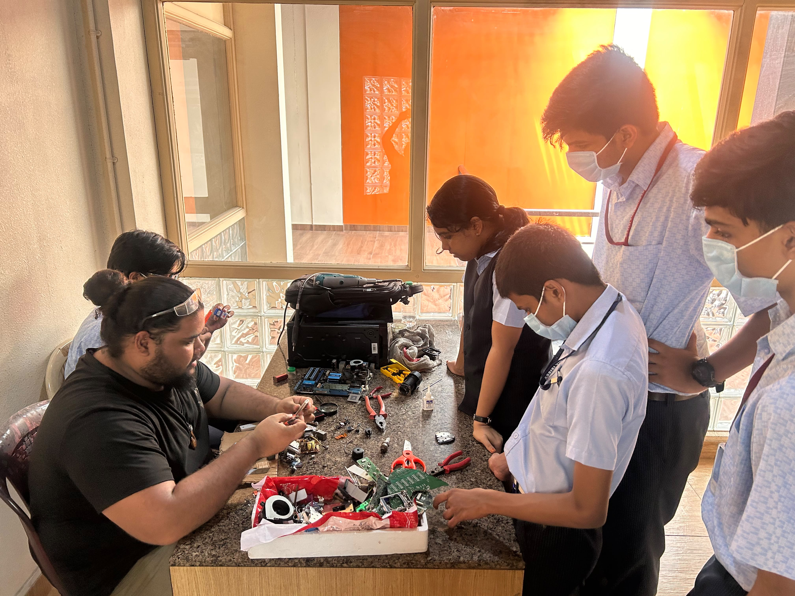
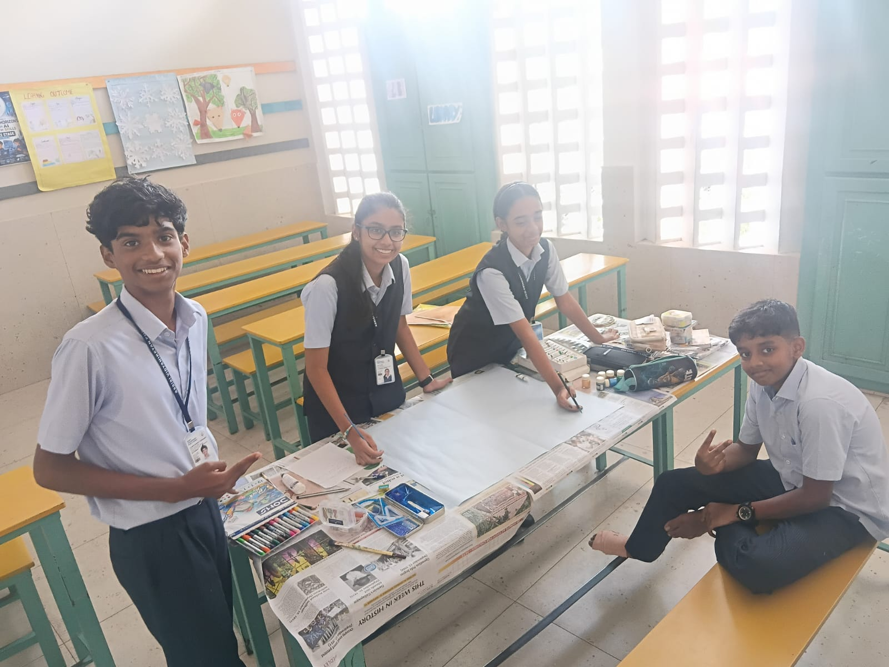

Myth
“If a device is broken, it has no value.”
Fact
Some devices can be repaired or reused; parts and materials may have recovery potential.
OUR LEARNING
E-waste is more than old gadgets. It connects resource use, data privacy, health, repair and local responsibility.


LEARN BY EXPLORING
“If a device is broken, it has no value.”
Some devices can be repaired or reused; parts and materials may have recovery potential.
“Deleting photos removes my data.”
Back up data, sign out of accounts and reset the device before handover.
“A charger is not e-waste.”
Discarded electrical accessories can also be e-waste.
INDIA & KERALA
Use authorised collection and recycling channels where available. NOVARA will add verified local resources only after review.